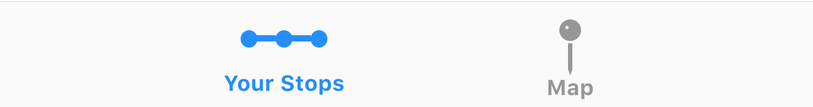

- 60
- eastbound for
Randolph/Harbor Dr
- arriving now at 9:42am
next bus at 10:02am
- 124
- eastbound for
Navy Pier
- arriving at 9:57am
next bus at 10:07am
- 151
- northbound for
Devon/Clark
- arriving at 10:15am
next bus at 10:31am
- J14
- southbound for
103rd/Stony Island
- arriving at 10:20am
next bus at 10:35am
- 124
- southbound for
Navy Pier
- arriving at 10:40am
next bus at 10:55am
- 6x
- Jackson Park Express
has been rerouted
- N/A
- 4
- Cottage Grove
is out of service
- Resumes 12:10am
- 20
- Madison
is out of service
- Resumes 12:10am
- 157
- Streeterville/Taylor
is out of service
- Resumes 6:00am
